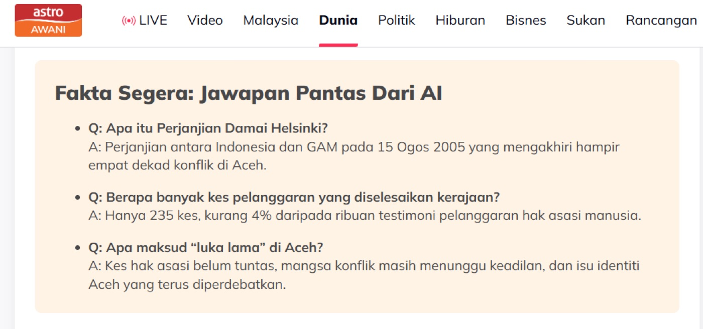
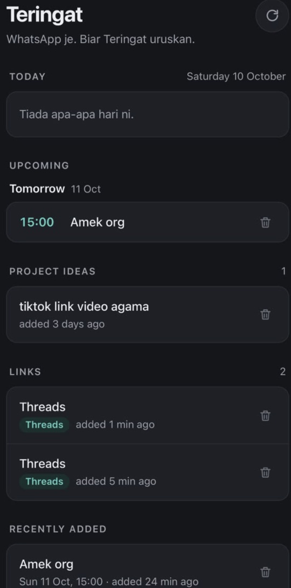
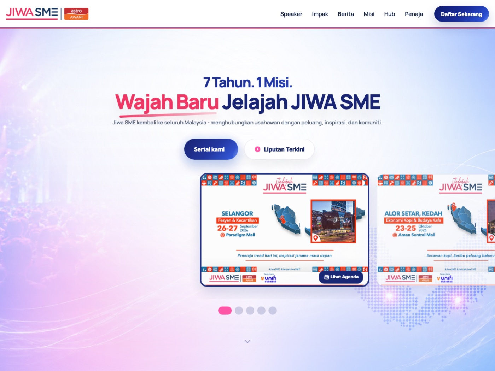
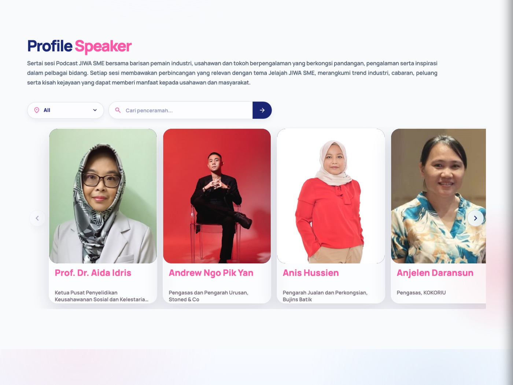
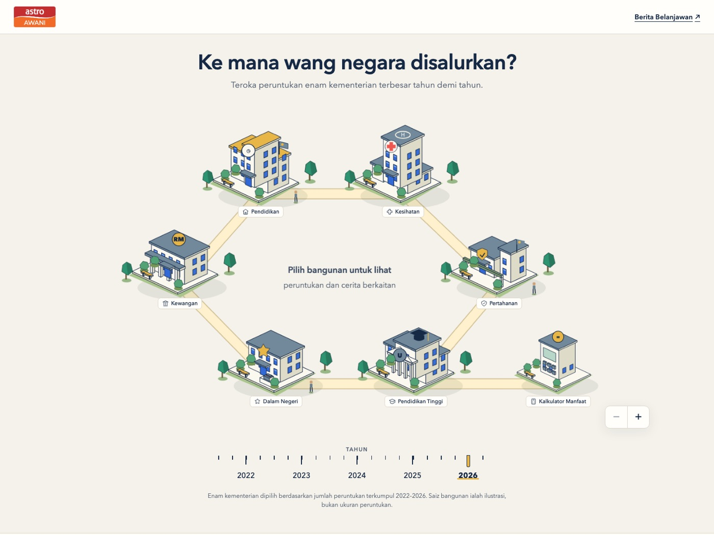
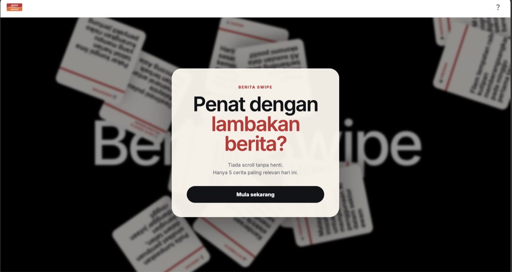
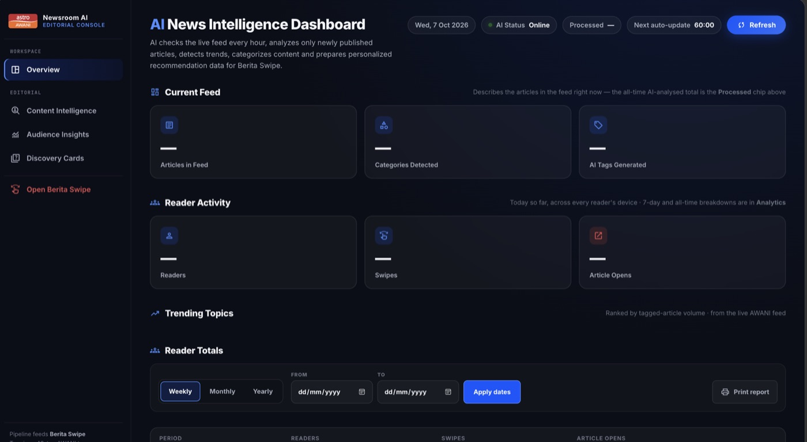
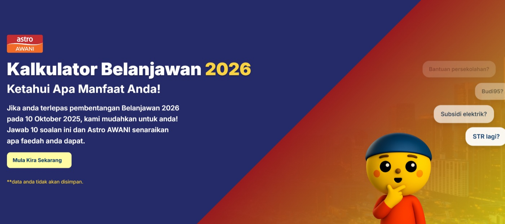
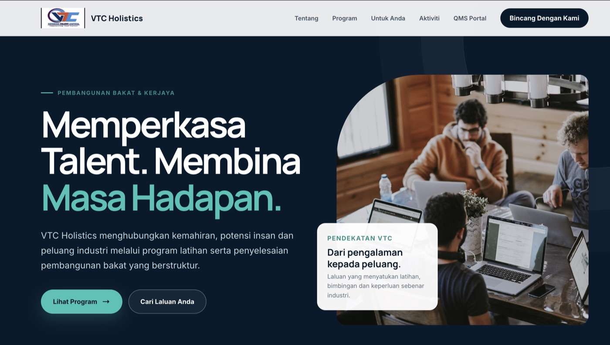

article → AI summary & FAQ
a little curious. always building. · 1:10
hi, i’m farah.
probably building something again...
what if...?
could this be easier?
maybe i should build it.

my brain has 27 tabs open.
at least some of them are useful.
but i don’t just collect ideas.
i build things that go live.



$ whoami
farah · started in enterprise IT
$ history | grep fujitsu
azure · powershell · sql server
automation · system support
$ _
before the pretty interfaces...
i learned what happens behind them.
enterprise IT → web development
function matters.
but so does the feeling.
AI is cool.
AI that actually helps? even better.

article → AI summary & FAQ


news → personalised discovery
whatsapp message → reminder
repetitive task → automated brief
new tools. new challenges.
i’ll figure it out.
curious beyond the screen.
always finding something new to learn.


still learning.
still creating.
always building.
FARAH NISA SYAHINDAH
Software Developer
Web Development · AI Integration · Automation
a little curious. a little creative. always building something.
explore my work ↗a portfolio film · 1:10
No narration — just visuals, captions and music.